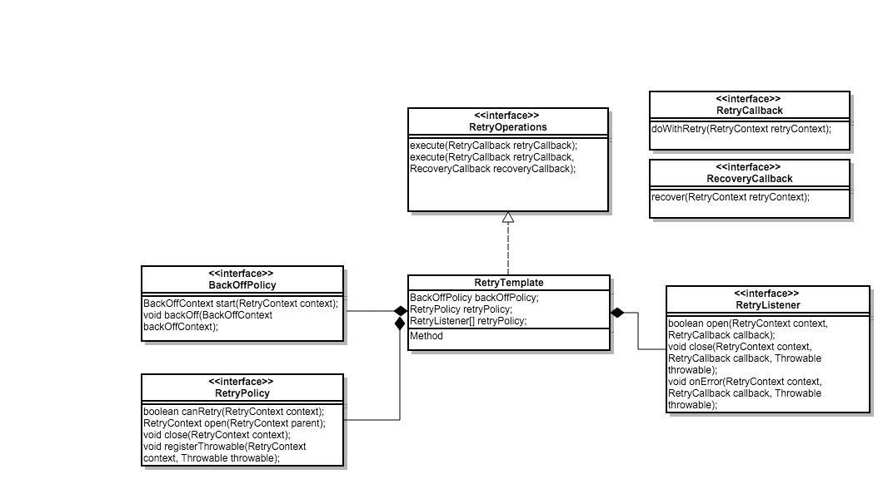

日常开发中经常遇到调用外部接口失败的情况，这时候我们需要去设置失败重试机制。正常情况我们的重试机制是：如果出错了，一般是网络抖动或者延迟的情况，设置重试一次，或者几次。方案如下：
try-catch-redo 简单重试模式：1
2
3
4
5try{
doSomething();
} catch {
redo();
}
如果想定制什么时候重试，重试几次，就需要我们自己定义重试策略，那么我们的代码就稍微复杂一些，可能是如下方案：
try-catch-redo-retry strategy 策略重试模式：1
2
3
4
5try{
doSomething();
} catch {
redo(retryTime,interval);
}
如上是我们一般的处理方案，由上我们大致可以看出如果想要实现一个优雅的重试方案，需要我们详细的去考虑重试机制，重试策略，重试失败措施，重试代码如何做到不侵入业务代码等等。所以，这样的一个小功能我们也是可以做成很有意思的小组件的。现代分布式系统中系统调用如此频繁，重试机制也是大家开发中的重复性劳动，所以这种不必要的代码已经有人给我们写好了，分别是 Java 中的 Spring-Retry 和 Guava-Retrying。
其中 Spring-Retry 是基于 Throwable 类型的重试机制，即针对可捕获异常执行重试策略，并提供相应的回滚策略；而 Guava-Retrying 提供了更为丰富的重试源定义，譬如多个异常或者多个返回值。那我们就先来学习下 Spring-Retry。
概述
官方定义：
This project provides declarative retry support for Spring applications. It is used in Spring Batch, Spring Integration, and others. Imperative retry is also supported for explicit usage.
类结构说明

概览
RetryCallback：封装你需要重试的业务逻辑（上文中的 doSth）；RecoverCallback：封装在多次重试都失败后你需要执行的业务逻辑（上文中的 doSthWhenStillFail）RetryContext：重试语境下的上下文，可用于在多次Retry或者Retry 和 Recover 之间传递参数或状态（在多次doSth或者doSth 与 doSthWhenStillFail 之间传递参数）；RetryOperations：定义了“重试”的基本框架（模板），要求传入RetryCallback，可选传入RecoveryCallback；RetryListener：典型的“监听者”，在重试的不同阶段通知“监听者”（例如 doSth，wait 等阶段时通知）；RetryPolicy：重试的策略或条件，可以简单的进行多次重试，可以是指定超时时间进行重试（上文中的 someCondition）；BackOffPolicy：重试的回退策略，在业务逻辑执行发生异常时。如果需要重试，我们可能需要等一段时间（可能服务器过于繁忙，如果一直不间隔重试可能拖垮服务器）， 当然这段时间可以是 0，也可以是固定的，可以是随机的（参见 tcp 的拥塞控制算法中的回退策略）。回退策略在上文中体现为 wait()；RetryTemplate：RetryOperations的具体实现，组合了RetryListener[]，BackOffPolicy，RetryPolicy。
核心功能
RetryOperations 接口
1 | public interface RetryOperations { |
RetryCallback 接口
1 | public interface RetryCallback<T> { |
回调被执行，如果它失败（通过抛出异常），它将被重试，直到它成功，或者实现决定中止。在 RetryOperations 接口中有许多重载的执行方法，当所有的重试尝试都结束时，它们处理各种用于恢复的用例，以及重试状态（允许客户机和实现在调用之间存储信息）。
重试策略
RetryPolicy 接口1
2
3
4
5
6
7
8
9
10
11
12
13
14public interface RetryPolicy extends Serializable {
// canRetry 在每次重试的时候调用，是否可以继续重试的判断条件
boolean canRetry(RetryContext context);
// open 重试开始前调用，会创建一个重试上下文到 RetryContext，保存重试的堆栈等信息 registerThrowable 每次重试异常时调用（有异常会继续重试）；
// 例：SimpleRetryPolicy 当重试次数达到3（默认3次）停止重试，重试次数保存在重试上下文中。
RetryContext open(RetryContext parent);
void close(RetryContext context);
void registerThrowable(RetryContext context, Throwable throwable);
}
常见策略
NeverRetryPolicy：只允许调用RetryCallback一次，不允许重试。AlwaysRetryPolicy：允许无限重试，直到成功，此方式逻辑不当会导致死循环。SimpleRetryPolicy：固定次数重试策略，默认重试最大次数为3次，RetryTemplate默认使用的策略。eg：
1
2SimpleRetryPolicy simpleRetryPolicy = new SimpleRetryPolicy();
simpleRetryPolicy.setMaxAttempts(4);TimeoutRetryPolicy：可以实现指定时间内的重试。超时时间通过参数 timeout 进行设置。eg： 默认超时时间1s，使用方式如下
1
2
3// all spend 1s
TimeoutRetryPolicy timeoutRetryPolicy = new TimeoutRetryPolicy();
timeoutRetryPolicy.setTimeout(2000L);ExceptionClassifierRetryPolicy：设置不同异常的重试策略，类似组合重试策略，区别在于这里只区分不同异常的重试。eg：
1
2
3
4
5
6
7ExceptionClassifierRetryPolicy retryPolicy = new ExceptionClassifierRetryPolicy();
Map<Class<? extends Throwable>, RetryPolicy> policyMap = Maps.newHashMap();
policyMap.put(NullPointerException.class, new SimpleRetryPolicy());
policyMap.put(ArithmeticException.class, new TimeoutRetryPolicy());
retryPolicy.setPolicyMap(policyMap);上述示例中，我们针对重试业务抛出的空指针异常使用
SimpleRetryPolicy策略，而对于算术异常采用TimeoutRetryPolicy策略。实际的重试过程中，这两中情况有可能交替出现，但不管如何，只要有一个重试策略达到终止状态，则整个重试调用终止。CircuitBreakerRetryPolicy：有熔断功能的重试策略，需设置3个参数openTimeout、resetTimeout和delegate。CompositeRetryPolicy：实现了重试策略的组合。通过其policies字段，可以为其添加多个重试策略。组合策略执行的过程中，所有策略只要有一个达成终止条件，那么该重试结束。我们可以用组合重试策略实现一些相对比较复杂的重试。eg： 比如我们要实现在指定时间1s内重试3次，每次重试间隔0.2秒，就可以使用以下方法
1
2
3
4
5
6
7
8
9
10
11
12
13CompositeRetryPolicy compositeRetryPolicy = new CompositeRetryPolicy();
SimpleRetryPolicy simpleRetryPolicy = new SimpleRetryPolicy();
TimeoutRetryPolicy timeoutRetryPolicy = new TimeoutRetryPolicy();
FixedBackOffPolicy fixedBackOffPolicy = new FixedBackOffPolicy();
fixedBackOffPolicy.setBackOffPeriod(200); // 每次重试间隔200ms
compositeRetryPolicy.setPolicies(new RetryPolicy[]{
simpleRetryPolicy,
timeoutRetryPolicy,
});
重试回退策略
重试策略 RetryPolicy 只是实现了基本的重试功能，也就是核心的循环逻辑，形如以下的代码：1
do ... while
那么每次重试之间的相关场景该如何处理呢？为此，Spring Retry 将重试间可能有的重试等待策略抽像成了 BackoffPolicy 接口，并提供了一些简单的实现。默认情况下是立即重试，如果需要配置等待一段时间后重试则需要指定回退策略 BackoffRetryPolicy。在使用 RetryTemplate 时，可以通过 setBackOffPolicy 方法进行设置。
NoBackOffPolicy：无回退算法策略，每次重试时立即重试。FixedBackOffPolicy：应该是最常用的重试间隔策略。有两个基本属性：backOffPeriod（设定间隔时间）和sleeper（等待策略）。sleeper默认是Thread.sleep— 即线程休眠，backOffPeriod指定休眠时间，默认1秒。eg:
1
2FixedBackOffPolicy fixedBackOffPolicy = new FixedBackOffPolicy();
fixedBackOffPolicy.setBackOffPeriod(1500);UniformRandomBackOffPolicy：允许给定最大，最小等待时间，然后让每次的重试在其之间进行随机等待。参数minBackOffPeriod和maxBackOffPeriod的默认值分别为500ms和1500ms，具体的计算方式是：ExponentialBackOffPolicy：类提供了指数级重试间隔的实现。通过该类，可以使重试之间的等待按指数级增长。其中：initialInterval属性为初始默认间隔，默认值是100毫秒；maxInterval属性为最大默认间隔。当实际计算出的间隔超过该值时，使用该值。默认为30秒；multiplier为乘数。默认2，当其等于1时，其行为同FixedBackOffPolicy为固定时间间隔。建议不要使用1，会造成重试过快；
ExponentialRandomBackOffPolicy：继承自ExponentialBackOffPolicy，只是重写了获取重试时间间隔的方法。在获取重试间隔后，在加上一些随机的时间。
有状态重试、无状态重试
所谓无状态重试是指重试在一个线程上下文中完成的重试，反之不在一个线程上下文完成重试的就是有状态重试。 之前的 SimpleRetryPolicy 就属于无状态重试，因为重试是在一个循环中完成的。那么什么时候后会出现或者说需要有状态重试呢？通常有两种情况：事务回滚和熔断。
数据库操作异常 DataAccessException，不能执行重试，而如果抛出其他异常可以重试。
熔断的意思不在当前循环中处理重试，而是全局重试模式（不是线程上下文）。熔断会跳出循环，那么必然会丢失线程上下文的堆栈信息。 那么肯定需要一种“全局模式”保存这种信息，目前的实现放在一个 cache（map 实现的）中，下次从缓存中获取就能继续重试了。
eg：1
2
3
4
5<dependency>
<groupId>org.springframework.retry</groupId>
<artifactId>spring-retry</artifactId>
<version>1.2.5.RELEASE</version>
</dependency>
1 | /** |
结果为：1
2
3
4
5
6
7
8
9
10
11
12
13
14
15
16
17
18
19
20
21
22
23
2423:49:57.575 [main] DEBUG com.example.retrymechanism.spring_retry.SpringRetry - 开始调取外部接口......
23:49:57.583 [main] DEBUG org.springframework.retry.support.RetryTemplate - Retry: count=0
23:49:57.583 [main] DEBUG com.example.retrymechanism.spring_retry.SpringRetry - 第 0 次重试.....
四月 29, 2020 11:49:57 下午 java.net.CookieManager put
SEVERE: Invalid cookie for http://www.weather.com.cn/data/sk/101020100.html: HttpOnly
23:49:57.754 [main] ERROR com.example.retrymechanism.spring_retry.SpringRetry - 捕获到的异常/ by zero......
23:49:57.858 [main] DEBUG org.springframework.retry.support.RetryTemplate - Checking for rethrow: count=1
23:49:57.858 [main] DEBUG org.springframework.retry.support.RetryTemplate - Retry: count=1
23:49:57.858 [main] DEBUG com.example.retrymechanism.spring_retry.SpringRetry - 第 1 次重试.....
四月 29, 2020 11:49:57 下午 java.net.CookieManager put
SEVERE: Invalid cookie for http://www.weather.com.cn/data/sk/101020100.html: HttpOnly
23:49:57.875 [main] ERROR com.example.retrymechanism.spring_retry.SpringRetry - 捕获到的异常/ by zero......
23:49:57.980 [main] DEBUG org.springframework.retry.support.RetryTemplate - Checking for rethrow: count=2
23:49:57.980 [main] DEBUG org.springframework.retry.support.RetryTemplate - Retry: count=2
23:49:57.980 [main] DEBUG com.example.retrymechanism.spring_retry.SpringRetry - 第 2 次重试.....
四月 29, 2020 11:49:57 下午 java.net.CookieManager put
SEVERE: Invalid cookie for http://www.weather.com.cn/data/sk/101020100.html: HttpOnly
23:49:57.994 [main] ERROR com.example.retrymechanism.spring_retry.SpringRetry - 捕获到的异常/ by zero......
23:49:57.994 [main] DEBUG org.springframework.retry.support.RetryTemplate - Checking for rethrow: count=3
23:49:57.994 [main] DEBUG org.springframework.retry.support.RetryTemplate - Retry failed last attempt: count=3
23:49:57.994 [main] INFO com.example.retrymechanism.spring_retry.SpringRetry - do recory operation...
23:49:57.994 [main] DEBUG com.example.retrymechanism.spring_retry.SpringRetry - 调取外部接口结束......
23:49:57.994 [main] INFO com.example.retrymechanism.spring_retry.SpringRetry - 调用返回的天气情况 null!!!
23:49:57.994 [main] INFO com.example.retrymechanism.spring_retry.SpringRetry - go on with something......
屏蔽 int a = 1 / 0; 后，请求正常的结果：
1 | 23:51:24.342 [main] DEBUG com.example.retrymechanism.spring_retry.SpringRetry - 开始调取外部接口...... |
声明式（基于注解）
最后我们了解下如何使用注解实现重试机制。最基本的，我们需要以下这几个注解：
@EnableRetry：能否重试。注解类的，其proxyTargetClass属性为true时，使用CGLIB代理。默认使用标准 JAVA 注解。当类中有@Retryable注释的方法时，对该方法生成代理。@Retryable：注解需要被重试的方法。include指定处理的异常类，默认所有异常。maxAttempts最大重试次数，默认3次。backoff重试等待策略。默认使用@Backoff注解。
@Backoff：重试等待策略。- 不设置参数时，默认使用
FixedBackOffPolicy重试等待1000ms。 - 只设置
delay()属性时，使用FixedBackOffPolicy重试等待指定的毫秒数。 - 当设置
delay()和maxDealy()属性时，重试等待在这两个值之间均态分布。 - 使用
delay()、maxDealy()和multiplier()属性时，使用ExponentialBackOffPolicy。 - 当设置
multiplier()属性不等于0时，同时也设置了random()属性时，使用ExponentialRandomBackOffPolicy。
- 不设置参数时，默认使用
@Recover：用于方法。用于@Retryable失败时的“兜底”处理方法。@Recover注释的方法参数为@Retryable异常类，返回值应与重试方法返回相同，否则无法识别！因此可以针对可能异常设置多个@Recover方法进行“兜底”处理。
eg：1
2
3
4
5
6
7
8
9
10
11
12
13
14
15
16
17
18
19
20
21
22
23
24
25
26
27
28
29
30
31
32
33
34
35
36
37
38
39
40
41
42
43
44
45
public class AnnoService {
public Logger logger = LoggerFactory.getLogger(AnnoService.class);
public String someService() {
int random = (int) (Math.random() * 10);
if (random < 4) {
logger.info("random={} Null Pointer Excep", random);
throw new NullPointerException();
} else if (random < 9) {
logger.info("random={} Arithmetic Excep", random);
throw new ArithmeticException();
}
logger.info("random={} ok !!!!", random);
return "ok";
}
public String recover(NullPointerException ne) {
logger.info("{}", "NullPointerException");
return "null pointer recover";
}
public String recover(ArithmeticException ne) {
logger.info("{}", "ArithmeticException");
return "ArithmeticException recover";
}
}
public class Main {
public static void main(String[] args) throws Exception {
ApplicationContext context = new AnnotationConfigApplicationContext("com.leeyee.spring.retry.*");
AnnoService annoService = context.getBean(AnnoService.class);
String result = annoService.someService();
System.out.println(result);
}
}
Source Code：https://github.com/V-Vincen/retry-mechanism
官网：https://github.com/spring-projects/spring-retry
参考：https://www.baeldung.com/spring-retry
If you like this blog or find it useful for you, you are welcome to comment on it. You are also welcome to share this blog, so that more people can participate in it. If the images used in the blog infringe your copyright, please contact the author to delete them. Thank you !